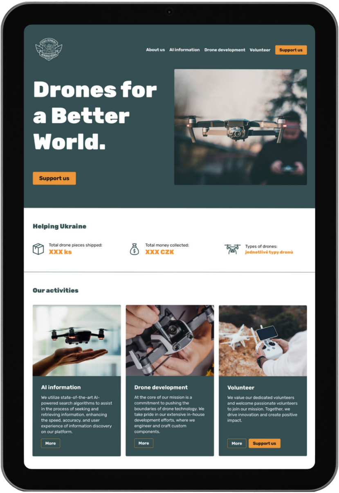

Aerorozvědka
Návrh informačního webu a designové identity
Aerorozvědka je spolek, který dlouhodobě dodává drony na pomoc Ukrajině. Cílem tohoto projektu bylo oslovit zejména zahraniční dárce a vytvořit podpůrný nástroj pro šíření většího povědomí o projektu mezi veřejností.
Dosažené cíle:
- návrh informačního webu se zaměřením na zahraniční dárce
- návrh designové identity
- nastavení brandu v nevojenském duchu
Použité nástroje:
- Figma
- Webflow